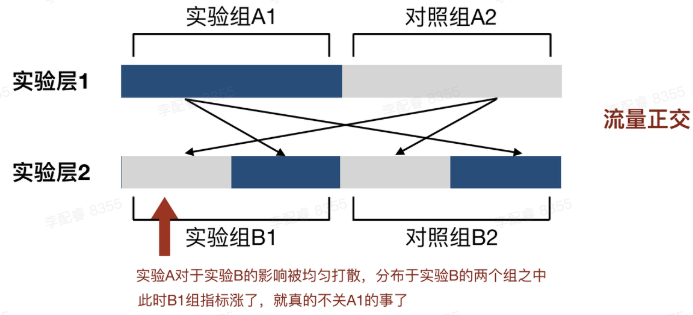

- 了解 A/B 测试的一些基本概念
- 一些简单的代码分流实现
为什么需要 A/B 测试
- 需要一种靠谱的评估方法来判断目标的有效性个人经验判断带来的不一致性和主观性
- 找到数据变动的真实因素找到那个真正影响数据的因素
什么是 A/B 测试
A/B 测试是一种随机实验过程，通过将一种变量的多个版本同时展示给不同的用户，来确定哪个版本能带来最大程度的业务指标提升。根据以上的描述，来总结 A/B 测试的三个特点：一个 A/B 测试只有一个变量
- 一个 A/B 测试可以多个版本同时进行，并不局限于两种方案
- A/B 测试的多种方案需要同时进行，具有相同的实验环境
A/B 测试的应用场景
- 精细化运营，数据驱动业务增长
- 为功能调整提供低风险，可量化的统计方法
A/B 测试的一些概念
命中
用户参与到实验之中即为命中，反之则为 “未命中”实验组，对照组
实验组和对照组是一组相对的概念，A/B 测试通常是为了验证一个新策略的效果，在实验中，抽取的用户随机分配到 A 组 和 B 组中，A 组用户体验到新策略，B 组用户体验到旧策略，那么 A 为实验组， B 为对照组。实验
我们将一个 A/B 测试称为一个实验，注意要和实验组不是一个东西，实验组是一个实验内划分的，一个实验里面区分多个实验组和对照组。互斥实验
不能共享流量的两种实验- 一份流量，实验顺序进行
- 流量拆分，同时进行多个实验，实验之间的流量互相独立
实验层技术
如果有多个 A/B 测试需要进行，进行时会出现一些问题：- 如果将流量平均分配到多个实验中，当实验过多或总流量减少时，单个实验分配的流量就会减少，较少的流量会增大数据的误差
- 一个个的进行实验会浪费时间，造成实验效率低下
正交实验
采用实验层技术的一种实验方式，提高实验效率的同时保证科学分配：举例，我们要同时做位置和颜色的实验，使用正交实验过程如下：1 | 总流量：100% |
如何设计一个 A/B 测试
- 分析现有流程找到存在问题的环节
- 观察分析用户行为，找到造成问题的原因
- 构建假设，尝试新增解决方案
- 验证假设，通过 A/B 测试来对多种方案进行评估
- 分析数据，采用方案
需要注意的一些问题
当 A/B 测试被设计出来之后，针对产品提出的具体实验过程，实验中的一些问题需要我们进行合理质疑的：A/B 测试只做两种方案，非 A 即 B
注意： A/B 测试是多方案同时进行的，不存在非对即错的思想，一个产品的改动会有各种各样的争议，我们需要列举出多种，足够多的假设来进行一一尝试，A/B 测试是一个多方案择优实验的过程，不是判断对错的过程A/B 测试没有对照组
不能拿新功能的数据来直接对比线上的数据，新旧功能上线的时间周期不同，宣发强度不同，或者可能受其他功能的影响，直接对比的方式得出的结论并不客观。一个A/B 测试有多个变量
多个变量带来的影响无法确定是哪个变量产生的积极或者消极作用，如果需要同时实验多个变量，需要将其分为一个个的实验，使用实验层技术进行正交实验来寻求最优解。无法保证数据的随机性
流量分配的方法要保证其尽可能的随机，比如，用用户标识的奇偶来进行分配，如果不能保证生成标识的算法是否足够随机，那流量分配可能会有偏好A/B 测试的代码实现
随机算法的设计
相关文章：https://towardsdatascience.com/assign-experiment-variants-at-scale-in-a-b-tests-e80fedb2779d好的随机算法的原则：- 对于一个实验，用户看到一个实验的不同分组的过程不能有偏向性
- 对于同一个用户，重复实验得到的结果应该是确定的
- 同时运行多个实验，多个实验之间不能相互影响关联的情况，用户看到下一个实验的概率不能受到上一个实验的影响
- 随机算法应该是支持增加用户看到实验组的概率，在不改变原来实验组人员的情况下，调节增加更多的实验组成员
短期的活动页面，需要支持更加灵活的流量分配
nginx 分流
目前公司方案：
1 | localtion / { |
xkw_device_id 的算法的随机性，2、比例分配不灵活split_clients
ngx_http_split_clients_module 是默认集成到 nginx 中的，不需要额外的安装成本文档地址：https://nginx.org/en/docs/http/ngx_http_split_clients_module.html#exampleDemo1 | http { |
nginx lua
通过可编程的方式实现流量分配1 | # http { |
前端应用
- 代码层面逻辑控制
- 灵活，精细，容易调整
- 需要接口实现
- 维护问题导致的无用代码
- 分支拆分
- 方便，省心
- 粗粒度，不灵活
- 带来的分支维护成本以及合并问题
数据统计
测试的结果是否采用需要使用数学的统计方法来判定，个人经验得出的结论存在误差，缺少说服力。更多统计可看下面的文档：https://zhuanlan.zhihu.com/p/346602966业界实现
火山引擎A/B测试方案的实现过程：https://console.volcengine.com/datatester没有银弹
- 数据的随机波动和时间影响导致结果的不可信。科学的统计方法才能得到正确的结论。
- 要采用哪种方案，要综合多种因素，不是数据唯一决定的。A/B 测试的方案还需要结合业务的定位，宣传方向等一起决定。